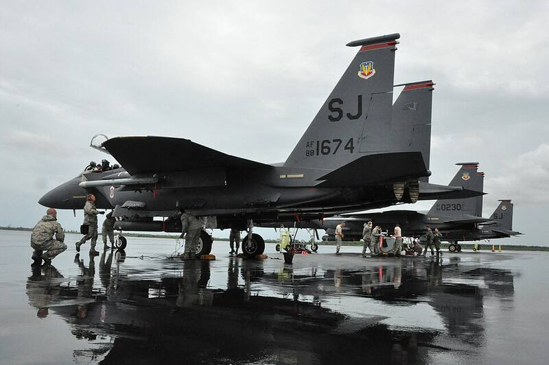

Seymour Johnson AFB North Carolina North Carolina · Military base · 35.339°N, 77.961°W F-15E Strike Eagles of the Seymour Johnson-based 414th Fighter Group, 2012. Photo: U.S. Air Force, Public domain (source) F-15E Strike Eagle base. 1 Open in the interactive Watcher Sources Seymour Johnson Air Force Base Wikipedia